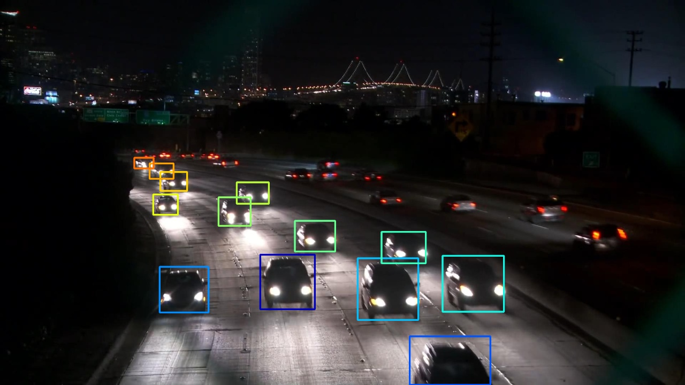

Dataset
We offer a dataset that surpasses existing official tracking datasets, such as GMOT-40, AnimalTrack and DanceTrack, in terms of advancement. Our dataset includes videos with a wider range of generic objects, each accompanied by its respective textual descriptions. Our dataset with textual description annotations are formatted in COCO format. Each generic object is labeled as follows:
Text label
{
video: "",
label: [
{
object: "",
object_synonym: [""],
attribute: "",
other_attributes: [""],
tracks = {}
},
]
}
Track label
{
video: "",
label: [
{
fix later
},
]
}
- “Video”: video name. For example "airplane-0"
- ”object": particular generic objects type. For example, aircraft
- “object_synonym”: synonym of object. For example, sky vehicle, air transportation
- “attribute”: specific characteristic of the object. For example, helicopter
- “other_attributes”: object's extra attributes which not necessary visible but representative. For example, chopper, copter

“video”: stock-3
“label”: [{
”object": "stock"
“object_synonym”: [“wild dog”]
“attribute”: ["gray fur"]
“other_attributes”: [“four legs”, “sharp teeth”,
"small ears", "strong jaw"] “tracks”: {stock-3.txt}
}]
“video”: ball-0
“label”: [{
”object": "stock"
“object_synonym”: ["sphere, "billard ball",
"billard sphere"] “attribute”: ["circle", "round", red"]
“other_attributes”: ["small", "smooth", "numbering",
"glossy"] “tracks”: {ball-0.txt}
}]

“video”: car-1
“label”: [{
”object": "car"
“object_synonym”: ["transport, "vehicle"]
“attribute”: ["white light"]
“other_attributes”: ["frontal side", "night covered"]
“tracks”: {car-1.txt}
}]